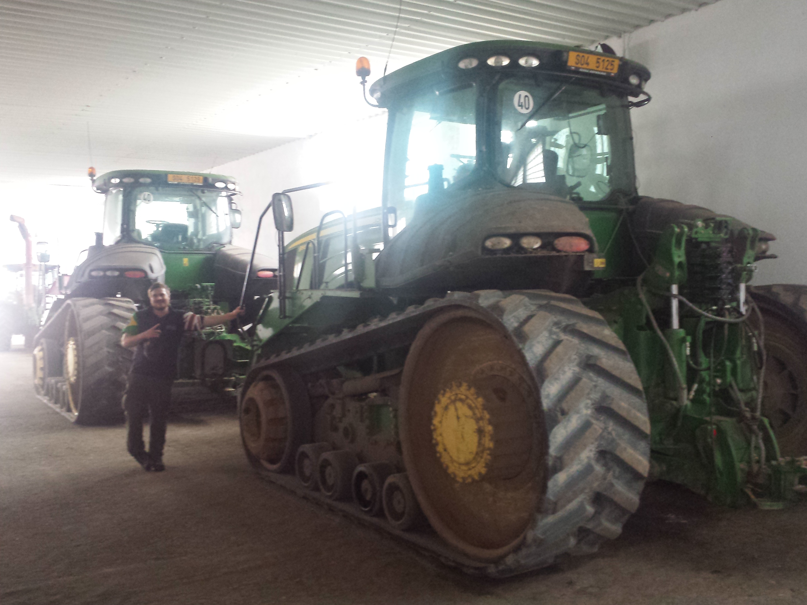
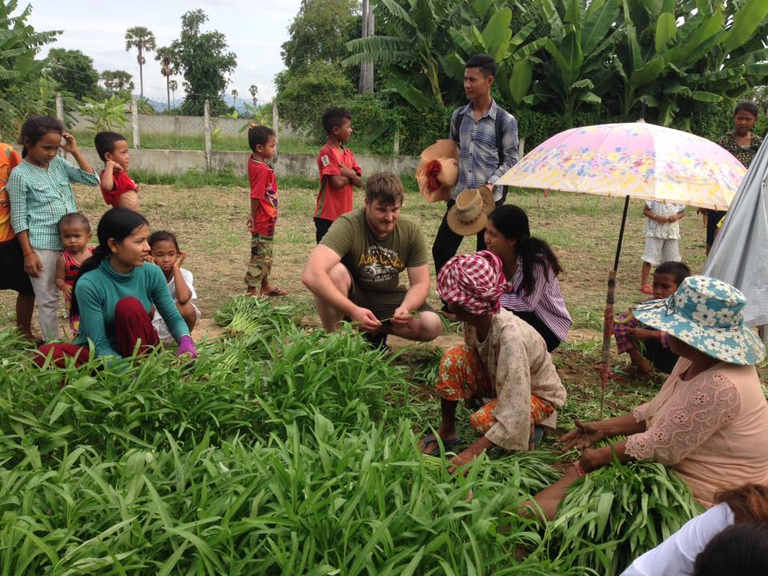
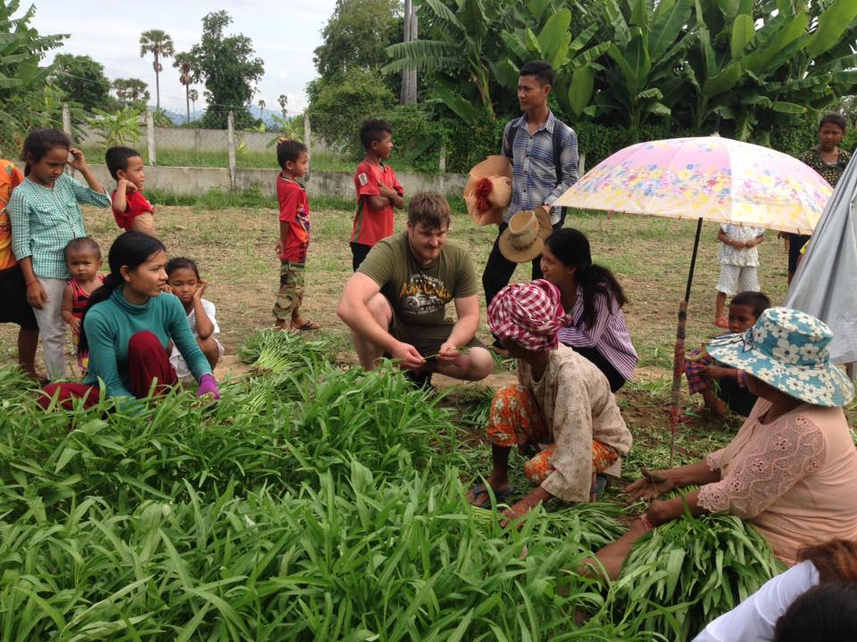

Technology Adoption
For Resilience In Agriculture
Created by Michael Ratcliffe for Harper Adams University TrainingNuffield Topic
Assessing Aquaponics Industry: What’s pushing its Rapid Growth and where will it go and thaws Holding it Back.
Drivers:Technology Development and Adoption Coupled with Consumer Demand
*Applicable to all Sectors
New Title: Technology Adoption For Resilience In Agriculture
Nuffield Journey
20 Countries across six Continents to meet directly with practitioners, academic institutes, customers, supporters, opposition, Government bodies and NGO’s
 

Learnings
| Ability | The next generation of automation is aiming to replace mental and cognitive demands, in ways that a human counterpart cannot complete. |
| Speed | Over the course of the next twenty years technology will change the way we manage and work our land more than it has changed over the last 200 |
| Distribution Advancements | Technology developments are also changing other industries,advancements in distribution technology will have a large effect on the range and price of product availability to consumers. |
Take home messages
-Be Aware: Network to stay in the know about technology developments.
-Know What You Want: Increased quality, reduce environmental impacts and technologies that can communicate this message to your local community and customers.
-Don’t be Leapfrogged:Technological advancements are likely to develop rapidly, be cautious of investing in novel technology with long term contracts.